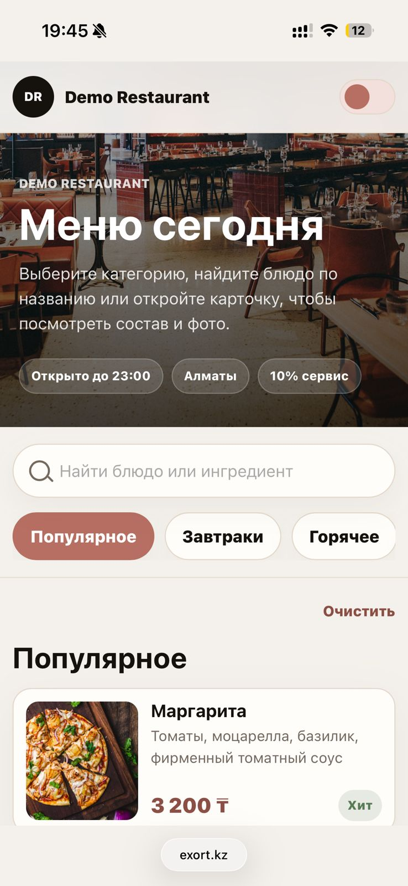

Меню открывается без приложения.
Arctic Tech для ресторанов
Цифровое меню без хаоса
Блюда, цены, фото, стоп-лист, языки и аналитика — в одной системе для ресторана.
QR-меню
Стоп-лист
RU / KZ / EN
QR menu
Live

Live update
Флэт уайт
Гость увидит изменение сразу после сохранения.
Product flow
QR → меню → изменение → обновление для гостя
Цена, фото, описание или стоп-лист.
Изменение уходит в живую страницу.
Без PDF, печати и ручных правок.
Обычно
Меню быстро устаревает
- PDF Нужно пересобирать файл после правок
- Печать Каждая версия стоит времени и денег
- Стоп-лист Гости спрашивают то, чего уже нет
- Данные Нет поиска, языков и аналитики
С Exort
Меню работает как продукт
- Live Изменения публикуются за секунды
- QR Гость всегда открывает актуальную версию
- Stop Недоступное скрывается одним действием
- Insight Видно, что смотрят чаще
Возможности
Четыре рабочих слоя системы
Управление меню
Категории, блюда и цены в одном контуре
Команда ресторана обновляет структуру меню без разработчика и без пересборки страницы.
Стоп-лист
Отключайте позиции до того, как гость спросит
Языки
RU / KZ / EN в одной системе
Аналитика
Понимайте интерес гостей
Integrations ready
Архитектура готовится к будущим интеграциям
Exort проектируется так, чтобы дальше подключать r_keeper, iiko, delivery-сценарии и future API без смены продуктовой логики.
r_keeper
iiko
delivery
future API
Запуск
От текущего меню до QR и домена
Получаем текущее меню
Собираем позиции, цены, языки и фотографии.
Собираем структуру
Переводим меню в управляемую цифровую модель.
Подключаем систему
Ресторан получает рабочий процесс обновления меню.
Запускаем QR и домен
Гости открывают меню с телефона и видят актуальные данные.
Запуск под ключ
Система меню для ресторана, а не разовый лендинг
QR-меню, система управления, стоп-лист, мультиязычность, базовая аналитика и подключение домена.